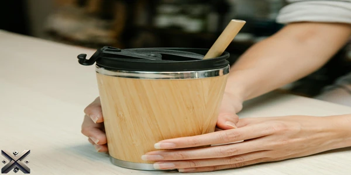
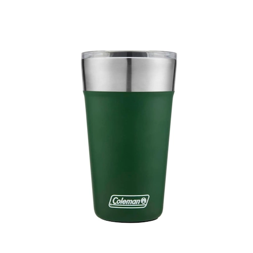
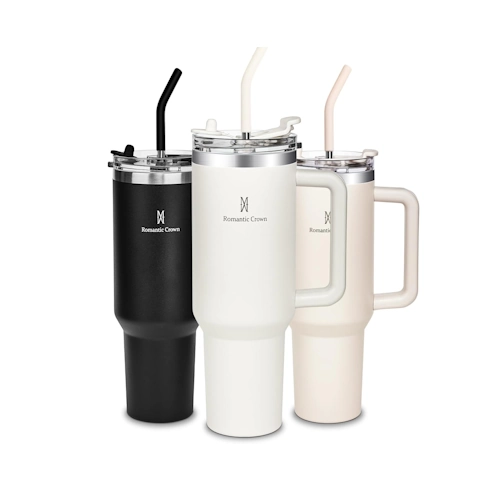
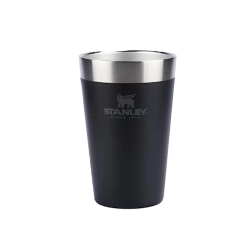
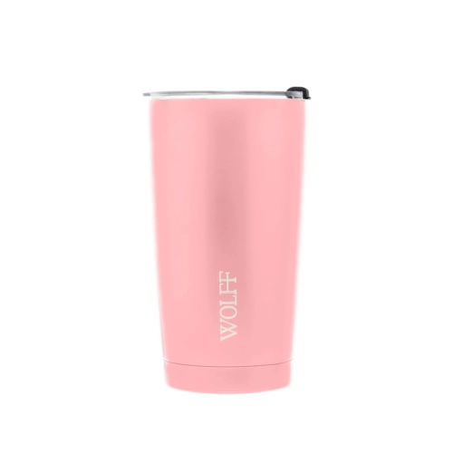
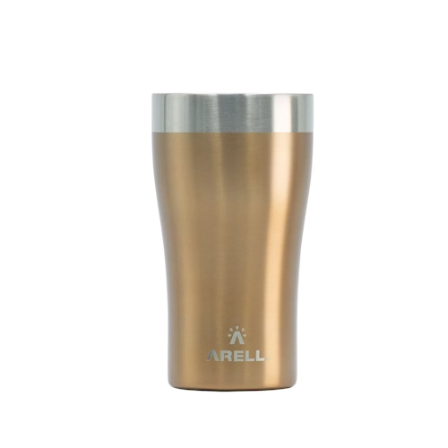

Se você está procurando os melhores copos térmicos do mercado, bem avaliados e com benefícios incríveis, hoje vamos apresentar cinco opções que se destacam pela qualidade, durabilidade e praticidade. Perfeitos para diferentes necessidades, esses copos garantem a temperatura ideal para suas bebidas por muito mais tempo.
Investir em um bom copo térmico significa mais conforto no seu dia a dia, seja para tomar um café quente no trabalho ou um suco gelado durante atividades ao ar livre.

Os copos térmicos são ideais para manter sua bebida quente ou fria por longos períodos. Seja para um café na correria do dia a dia ou uma bebida gelada em um passeio, eles oferecem conforto e eficiência.
Copos térmicos podem ser encontrados em lojas especializadas em utensílios domésticos, artigos esportivos e acessórios para bebidas. Também estão disponíveis em supermercados e plataformas de comércio eletrônico.

Imagine desfrutar da sua bebida preferida gelada por até 15 horas sem se preocupar com o copo suando ou transferindo temperatura. O copo térmico coleman oferece exatamente isso! Feito em aço inoxidável 18/8, ele garante resistência e longa durabilidade.
Seu isolamento a vácuo de parede dupla mantém a bebida na temperatura ideal, seja quente ou fria. Outro diferencial é a tampa de acrílico transparente com abertura deslizante, facilitando o uso no dia a dia. Além disso, conta com um abridor de garrafa integrado ao fundo, tornando-o ainda mais prático.
Esse modelo também possui um design ergonômico e uma base antiderrapante, oferecendo mais segurança ao segurá-lo. Ele é perfeito para quem busca praticidade e eficiência sem abrir mão do estilo. Além disso, por ser feito de aço inoxidável de alta qualidade, não retém odores ou sabores, garantindo sempre o gosto original da sua bebida.

Se você procura um copo térmico que combine praticidade, durabilidade e funcionalidade superior, o Romantic Crown é a escolha ideal. Com capacidade de 1,18 L, ele foi projetado para oferecer máximo conforto e eficiência.
Possui tampa 100% à prova de vazamentos e design de rosca dupla que garante vedação perfeita. Feito de aço inoxidável 304 com isolamento a vácuo, mantém bebidas geladas por até 12 horas e quentes por até 8 horas. Além disso, é livre de BPA, proporcionando total segurança para o uso diário.
Seu canudo reutilizável é um diferencial, pois evita o desperdício de plástico e contribui para um consumo mais sustentável. O design moderno e elegante torna esse copo ideal tanto para uso pessoal quanto para presentear alguém especial. Sua alça ergonômica facilita o transporte, tornando-o ideal para viagens e atividades ao ar livre.

O copo térmico Stanley de 473 ml é perfeito para quem busca estilo, praticidade e desempenho. Com isolamento térmico de parede dupla e tecnologia a vácuo, mantém sua cerveja gelada por até 4 horas.
O design clássico proporciona uma pegada firme e confortável, evitando deslizes. Mesmo sem tampa, sua construção impede que o copo sue por fora, garantindo mãos sempre secas. Ideal para churrascos, aventuras ao ar livre e momentos de lazer.
Esse modelo é uma excelente opção para quem gosta de qualidade e tradição. A Stanley é uma marca renomada, conhecida pela resistência de seus produtos. O copo é feito para durar por muitos anos sem perder sua eficiência térmica. Além disso, pode ser facilmente lavado à mão ou na máquina de lavar louça, garantindo mais praticidade no dia a dia.

O copo térmico Wolf é ideal para quem busca elegância sem abrir mão da funcionalidade. Com parede dupla isolante e fabricação em aço inox, mantém a temperatura da bebida por longos períodos.
Seu design moderno e a tampa de acrílico contribuem para o isolamento térmico avançado. Além disso, a limpeza é fácil e prática, sendo feita com sabão neutro e esponja macia. Um copo sofisticado para qualquer ocasião.
O Wolf também é uma excelente opção para quem gosta de bebidas quentes, pois mantém a temperatura interna sem transferir calor para a parte externa. Seu acabamento premium oferece um toque refinado e resistente. Ele é ideal para levar ao trabalho, academia ou viagens, garantindo que sua bebida esteja sempre na temperatura perfeita.

Encerramos nossa seleção com o copo térmico ARELL, um modelo versátil e eficiente. Com capacidade para 750 ml, ele é ideal para quem precisa de um copo grande para acompanhar a rotina diária.
Seu isolamento térmico mantém líquidos frios por até 24 horas e quentes por até 12 horas. Feito em aço inoxidável de alta qualidade, é resistente, durável e livre de BPA. Além disso, sua tampa hermética evita vazamentos, tornando-o ideal para levar para qualquer lugar.
Outro diferencial desse copo é seu revestimento externo texturizado, que proporciona uma pegada firme e confortável, evitando escorregões. Ele também conta com um bico retrátil, permitindo que você beba sem precisar remover a tampa completamente. Ideal para esportes, caminhadas, viagens e até mesmo para o dia a dia no trabalho.
Agora que você conhece os cinco melhores copos térmicos de 2025, chegou a hora de escolher o modelo que mais combina com seu estilo de vida. Seja para manter sua bebida gelada no calor ou seu café quente no inverno, cada um desses copos oferece qualidade e desempenho excepcionais.
Investir em um bom copo térmico é essencial para quem valoriza conforto e praticidade. Além disso, é uma escolha sustentável, reduzindo o uso de copos descartáveis e ajudando o meio ambiente. Escolha o seu preferido e aproveite bebidas na temperatura ideal sempre que quiser!